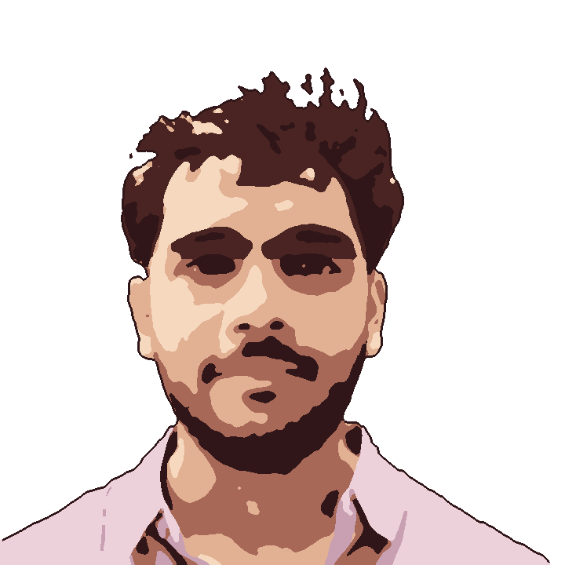

Senior engineer · New York
Hi, I'm Harsh.
Eleven years of shipping software across five cities. Today I'm a senior engineer at Bank of America in New York, building things people actually use.

hey there.
About
Five cities, one habit:
caring about the last ten percent.
I started in 2014 writing Sitecore sites for pharma clients at Accenture. Then Publicis Sapient taught me that craft isn't optional — we built design-obsessed sites for clients like Emaar in Dubai.
At Bank of America I moved from trader risk screens in Mumbai, to the UI team in Dublin, to New York in 2022, where I build and lead engineering work across the bank.
Off the clock:
GuitarKarate black beltCars &
long drivesCookingMicrocontrollersSinging
(badly)GamingLearning to skiLearning to
drive a boat
- 2014Accenture
Web developer · Mumbai - 2015Publicis Sapient
Frontend Engineer · Mumbai - 2017Bank of America
Software Engineer · Mumbai - 2020Bank of America
Software Engineer · Dublin - 2022 — nowBank of
America
Principal Engineer · New York
Shelf